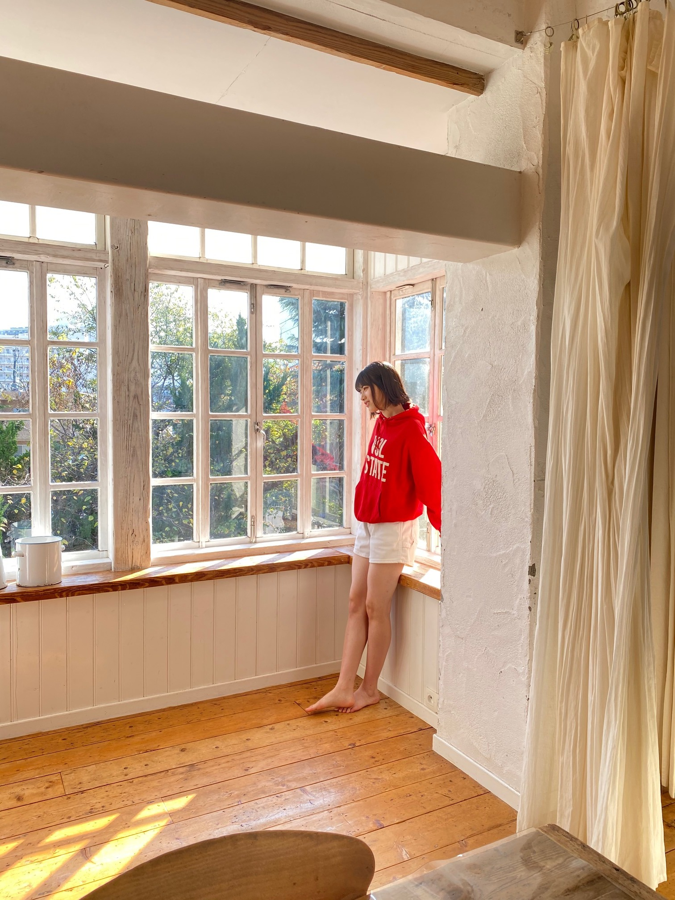
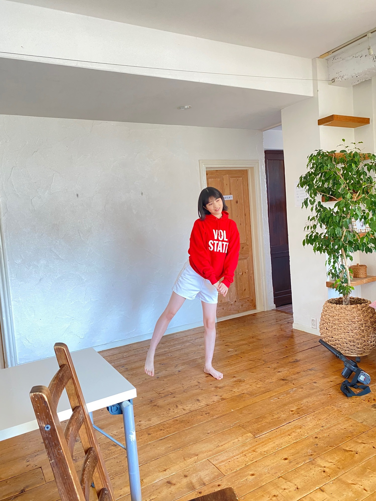

2020/1215Tueお疲れ様です！東京土産や〜！ 林瑠奈です。
本日もお疲れ様です。
乃木坂46、4期生の林瑠奈です。
神奈川県出身高校2年生17歳
華咲くセブンのティーンの林瑠奈です。
負けるなしょげるな林瑠奈、今日も1日頑張るな
(ピンポーン)
47周目となりました、ブログリレー。
予約していた『東京フォーク・TOKYOスプーン』が届きました！

さらばさんがやられてる番組の【今日からやる会議】をずっと拝見していまして、
この後ノギザカスキッツの収録でお会いしたときに、予約したことを伝えたら、「もうすぐ届くと思うわ〜」って言ってはったんですよ。
写真で出ている実物は、森田さんがデザインされたTOKYOスプーンです！
有り難く使わせていただきます〜
...........................................................................
12月6日発売の『ヤングマガジン』さんに、
黒見、璃果、松尾、弓木、林の5人で掲載していただいています。
以下、オフショットです。


BRODYさんやFLASHスペシャルさんを思い出しますね。


りかも言ってましたが、懐かしの白衣装です。
りかのオレンジって珍しいですよね。
なおの緑はわりとイメージ通りな感じ。
わたしは赤でした！
インタビューもしていただきました。是非！！
♪:*:･･:*:･･:*:･･:*:･･:*:･･:*:♪:*:･･:*:･･:*:･･:*:･･:*:･
12月8日。
レコメン！さんに出演させていただきました。
乃木坂四期生メガ盛り祭りです！
やくぼちゃんとあやめちゃんの珍しい組み合わせだったんですけど、のりさんのペースに揉まれながら楽しくお話しさせて頂きました。
タイムフリーで今日まで聴けるので是非！！
ちなみに今日は、さくちゃんとせーらちゃんが生出演しますよ〜！
♪:*:･･:*:･･:*:･･:*:･･:*:･･:*:♪:*:･･:*:･･:*:･･:*:･･:*:･
明日はミュウちゃんです。
みゆちゃんの自撮りがわたしの携帯に入ってるよ。
アディオス！！！！！！！
次のブログ担当日は12月20日！
いよいよM-1や〜！！たのしみすぎる！！！
かしこ

PROFILE
新4期生リレー
202104
| SUN | MON | TUE | WED | THU | FRI | SAT |
|---|---|---|---|---|---|---|
| 1 | 2 | 3 | ||||
| 4 | 5 | 6 | 7 | 8 | 9 | 10 |
| 11 | 12 | 13 | 14 | 15 | 16 | 17 |
| 18 | 19 | 20 | 21 | 22 | 23 | 24 |
| 25 | 26 | 27 | 28 | 29 | 30 | |

コメント(178)
むぎゅ
コーンフレークやないかーい
今回は、誰だ
オフショットいい感じに陽の光も差し込んで神々しいですねｗ
どのオフショットも素敵です！！
ここ数年M-1見てへんな～笑い飯が優勝した年以降くらいから見てない気が...関西人やからお笑いは好きやけど最近の話題の芸人さんを見んと中川家とか2丁拳銃とかベテランの人の漫才ばっかり見てしまいますｗ
話は変わりますが、来年の1月13日(水曜日)はオーディション配信をした2018年8月14日(火曜日)から"884日"経ちます！早いものですね...。もう一ヶ月きってるんですよ
ブログ更新日と被っていないのが少し残念ですｗ
今日も素敵なブログに可愛い写真をありがとう！
一段と寒くなってきましたのでくれぐれもご自愛ください。これからも応援してるよ～！
--∫-- ∫-∫-- ∫∫ # ∫-∫∫∫ ---∫-
オフショット可愛い〜！需要しかないよ本当に感謝。るなぴが赤色の服ってあんまりイメージないかも…でもすごい似合ってるよ！るなぴは白色の服着ると透明感がすごい。後ろの背景透けて見えそう。
日刊スポーツのコラム読んだよ！イヤリングぶっ飛んでたんだね、びっくりした！裏話とか聞くともう1回見たくなるなぁ。来年も4期生ライブがあることを期待！
お仕事頑張ってね！！
推しになっちゃいました(^^)
Tokyoスプーンで何を食べる予定ですか？自分は今夜は普通のスプーンでオニオングラタンスープ飲もうと思ってたんですけど、何故かスーパーでカップ麺を目にした時にはすっかり忘れてしまい、カップ麺にしちゃいました！今夜は箸でした。スプーンは近いうちにオニオングラタンスープの時活躍してもらいましょう。
レコメンお疲れ様でした、矢久保、あやめん皆んな優しいからなんか譲りあいな感じでしたね、オテンキのりさんが面白いので良かったです。
オフショット良いですね、以前璃果ちゃんの時も思ったんですけど、脚が長いですね！羨ましいです。
レコメンの4期生祭リも今日と明日で終わりますね、なんか早く感じます。明日のレコメンがやんちゃん、奈於ちゃん、まゆたんなので、自分はこの3人にはとても親近感を持ってます。早押しクイズとかしたいですね！
おやすみ
和ラーのふたを開けたら、「熱湯注いでね! 林瑠奈」との文字が書かれていました。
前々から、林さんは、「独特な視点を文章にできる女性だな」と尊敬していましたが、
直筆の文字を見て、」「日々の生活の丁寧さが伝わってくる文字を書く女性だ」と感心しました。
学業との両立は大変かと思いますが、文章(文字)と言葉を武器にして、大活躍してほしいな!
TOKYOスプーンオシャレだね！実際に食事で使うってなったら使いにくそうだけど笑
ヤンマガの5人グラビアも見たよ〜！るなぴ赤似合ってて可愛かった！
コラム読んでイヤリングの話とか4期の絆が感じられてよかったよ〜
るなぴが思う良かった曲とかも気になったなぁ、次のコラムも楽しみ！
ラジオとかも聴いて改めてるなぴにラジオやお話系のお仕事があったら嬉しいなって思ったよ、るなぴのトーク聞くの楽しいね！
次のブログも楽しみにしてるね！
コントしてるるなちゃんが生き生きしていてめっちゃ好きです！
最近めっちゃ寒いから体調に気をつけてね！
こんばんわ、いつもよりちょっと速めの更新な気がします。
うれしい。
オフショットの瑠奈ちゃんがナチュラルかわいいで、
とってもかわいかったです……(小並感)
赤色パーカー、なんだか戦隊ものの主役っぽくて好きです。
明るい色も着こなしちゃうところ、恋です(白目)
コラムでのイヤリング事件見ました。
さすが、四期生の絆！！！すごい！！！
と感動させて頂きました。
瑠奈ちゃんとお揃いのペンギン、買おうか検討中です。
ミーグリは分かんない……！
また、5日後に会いましょう！！
かしこ
『ヤングマガジン』純白ワンピに赤パーカーが映えます。オフショットありがとう。
『レコメン！』お疲れ様。4期生祭りもたけなわ、ポップチューン「Out of the blue」もヘビロテと楽しい放送が続きますね♪
こんばんは
そのスプーンいいな
どうやって使うの？
言葉たらずは
どうやって防ぐことが
出来るんだろうか
林はどうしてますか？
全部細かく話すとうざがられるんじゃ
ないかと思っちゃうし
大人しいと扱いづらいと
思われるんじゃないかと
林はどうしてますか？
教えてくれたら
嬉しいな
今日は寒いですね。 雪が降ってます。つもるかなぁ
私事ですが、今日で、16歳になりました！ シックスティーンです！
Mー1みないと！ ヤンマガ買います！
がくたびのオープニングかわいすぎたよー！
質問です！
今年やり残したことはー？
来年の抱負はなんですか？
答えてくれたらとてもうれしいです！
次回のブログ更新もたのしみにしています！ヾ(＾v＾)k
お体にお気をつけてお過ごしください！
また書き込むねー！
またねー！
ヤングマガジンもちろん買いました。白と赤の瑠奈ちゃんが可愛くて気絶しました。今も見るたびに気絶してます。
ノギザカスキッツ毎回見てます。瑠奈ちゃんの出番が待ち遠しいです。
年末だね。来年はミーグリがあります。会えるのを楽しみにしてます。
ヤンマガ買うの忘れてました。マジですまぬ。。
明日の朝、学校行くついでに買うから許してください。
質問「最近4番目くらいに面白いと思う芸人さんは？」
4番目ってとこが肝です。光太刀魚。
そんじゃ今回はこの辺でアディオス！！アディオス！！！
(大事なので2回言いました。愛しさの三枚下ろし。)
お買いになったんですね。
ヤンマガ買いました～４期生のみんな可愛かったですよ～。
M-1誰が優勝すると思いますか？
オフショットが尊過ぎるんよ
早くミーグリで話したいな〜！楽しみや！
負けるなしょげるな林瑠奈 ヽ(*≧ω≦)ﾉ
大好き大好き林瑠奈 ∠( 'ω')／
聞いた！見た！買った！
負けるなしょげるな林瑠奈カワイーなあ
るなちゃんの顔とスタイルと歌声がめっちゃ好き！
あと大好きなりかちゃんと仲良しなところも好き！
あとりかちゃんのブログでもコメントしたんやけど、瑠奈っていう名前と字が好き！瑠ってキレイよね。璃もキレイ。
キレイといえばいくちゃんが出てた舞台よね。あれは必見やで…観に行ったけどほんまによかった。。。
瑠奈ちゃんの歌声もこれからたくさん聴きたいなー！
えー森田さん結構センスあるなぁいいなぁ！
はやしが毎週見てるお笑い番組が結構多そうですごい！
3枚目のはやしめっちゃかわいい！
M-1予約しましたよー
2、3回戦もはやしならチェックしてるんですかねー
りかちゃんがカップルの2年目( Ꙭ)!!って言ってたけどもう相棒みたいな感じになってきてるんかな笑♪:*:･･:*:アディオス！！！！！！！
4期生ライブ本当にはやししっかりダンスしててすごい一人前のアイドルになったなぁって思ったよ！可愛さとかもあるから17人前くらいやねんけど笑
かしこ
米津玄師さんの曲は聞いていますか？
ヤンマガ買ったよん♪
るなぴスタイル良すぎて憧れる…✨
次まで待ってるね〜
アディオス！！！！
かしこ
47周目ですか。50周ももうすぐですねー
何か記念になることができるといいですね
ヤングマガジン、もちろん買いましたよー。
うちの田舎ではすぐ売り切れになってしまうので、発売日の早朝にダッシュで買いに行きました。笑
本編も良かったけど、オフショットも素敵ですね
たくさんのオフショット、ありがとうございます！
滋賀県 ふたり
こんばんは♬
寒いわ！もうタイツが要る！
帰りの通勤急行。あっという間に塚口を出てて
危うく降り損ねるとこやった。。。
ヤンマガさん見たよ
みんなが糸を手繰ってるページが好き
なんせみんなかわいいもん
関西弁が渋滞する４期生。
ええと思うよ。
関西弁って伝染るからな。
はやし♡はエセ関西弁を許せん人？
スキッツ楽しみにしてるで。
身体を大切に
おやすみ
浪速の商人（あきんど）
o(^-^)o
かしこ
新4期生とは呼びたくない存在
堂々と4期生でよき！！！
最近めっちゃ寒いねぇ〜〜学生勢は厚着できないから
辛いよ（ ; ; ）（ ; ; ）(分かる？？)
そいえば国語の授業の漢字で瑠と璃が出てきて
瑠璃やん〜〜最高〜〜〜ってなった笑
るなぴなら分かってくれると思うけど日常のことに
反応しがち笑(オタクなので))
ほんっっとに寒いけど体調気をつけてね！！
体育頑張ろ！！！
ヤングマガジンのオフショットありがとう！
こういうお写真嬉しい♡
はじめて見たときからずっと思っていたけれど、やっぱり頭身が綺麗で、お洋服が映えるね！素敵◡̈
瑠奈ちゃんの声、個人PVをラジオ代わりにBGMにするくらい好きです。
17日のLINE LIVEも楽しみにしてます！
またね◡̈
『今日からやる会議』まで観ているとは、流石の一言です。池の水サイダーも飲みましたか？
M-1の日にブログ当番とは、もってますね(^^)
アディオス！
いつも元気や勇気をもらっています！
最近のブログで福徳さんの小説を読んでいると言っていたのを見て僕も読んでみました。
ネタバレになってたらごめんなさい。
感想は最高に面白かったです！でも周りに本を読む友達がいなくてこの感動をシェアできないのが辛いのでこの本に出会わせてくれた林さんに感想を言いたいと思いました。
テレビの音量のやつはよく小さい頃に僕もやっていたので読んでいて楽しくなりました、でもこれが最後のシーンに繋がるのがもう最高でした！
一番印象に残ったのは山根の謎の方言が最初は読んでいて「読みずれ〜な〜」と思ったけどなんかだんだん山根の方言がホッとするというか安心するというか最後には好きになっていました。
「初恋クレイジー」も好きになったりオムライスを卵焼き器で作ったりもしましたw
もっと書きたいですが長くなってしまうのでこの辺で、この本に出会わせてくれて本当にありがとうございます！
「どういたしまして」と言っていただけたら嬉しいです。
これからも林さんの活動を心より応援しています！
グラビアとても素敵ですね！
オフショットもありがとうございます。
赤色がとても似合っております。
瑠奈ちゃんの好きな色は何色ですか？
私個人としては青や紺などの寒色系が似合うのはもちろん、赤やオレンジなどの暖色系もとても似合うと思います。さらには緑などの自然を感じる色も似合うと思います。はい、結果全色似合いますね。
もちろん全色似合うということは、全て混ぜて真っ黒になってもシックな感じで似合うと思いますし、逆に白は研修生時代を彷彿とさせる透明感あふれる爽やかなイメージがあるのでとても似合うと思います。
もう最強ですね。
これから様々な色を纏った瑠奈ちゃんを見ていけたらなと思います。
部屋で暖房をつけずにいると手が悴んでスマホどころではありません。
寒さと共存しながら今週も頑張りましょう！
M-1とても楽しみですね！
それでは、アディオス！！！
かしこ
いったい何なんだろう。
さらばさんのグッズなのか・・・？
わかんないけど
林さんが嬉しそうだから良い
そしてヤンマガ。
表紙の飛鳥に気をとられて
買ってないんだよなぁ～。
週刊だから、もう無いよね。
ちょっとショック・・・。
今後は気を付けないと。
それじゃ今夜は この辺で。
Ｋ．Ｉでした。
おやすみ～☆ミ
私も最近欲しい本（ムック本）が3冊もあるのですが、今月はアルバイトを始めた関係もあって、ちょっとお金を使いすぎたので、本の購入は来年にします。来年には26thのリリースもあるので、2月以降かな。26thも全タイプ予約しました。楽曲も楽しみですが、付属のブルーレイはどんな内容なのかな？今から楽しみです。
ではまた。
もうすっかり冬ですね〜。冬は温かいシチューを飲みたくなるから、そんな素敵なスプーンとか欲しくなりますね！お気に入りの食器で食べる料理は一段と美味しく感じます。そのTOKYOスプーンと東京フォークのデザインかっこいいですね！やっぱり2021年東京オリンピックとか意識しているんですかね〜。素敵。
森田さんって、凄いなぁと最近よく感じてます！少し偉そうなんだけど、森田さんと東ブクロさんって、コントとか観てても、かなりセンス良いと思います！！キングオブコント決勝6回進出はやっぱり伊達じゃないね！ノギザカスキッツで乃木坂と共演しているの嬉しい。
コラムを読んだのですが、曲中にそんなイヤリングの事件があったなんて、笑。矢久保ちゃんとやんちゃんのナイスプレー、4期性の絆を感じられて良かったよ〜。私は「ありがちな恋愛」の綺麗なフォーメーションダンスが良かったと思います！るなぴの良かったと思う曲も気になりました！
長文失礼しました。
アディオス！
ブログの更新、ありがとうございます。
「ヤングマガジン」、見ましたよ。
そして、「レコメン・４期生メガ盛り祭り」おつかれさまでした。楽しい放送ありがとうございます。４期生ライブを改めて振り返ることができ、うれしく思います。
考えてみれば、「4期生ライブ」を中心に、「のぎおび」や「レコメン」、「らじらー」‥‥、そしていろいろな雑誌、たくさんの機会を経て、この一年を振り返るかようでホントありがたいことですね。
おまけに、「今年の流行語」ということで「ライスください」も有望視、うれしいじゃありませんか。
来たるべき新しい年も素晴らしい年でありますように、お祈りしております。
瑠奈ちゃんと同じ高校2年生の愛知の覇王です！
さくらちゃんとあやめちゃんと楓さんと同じ愛知県出身だよ！
オフショットありがとう！
どれもめっちゃ似合っていて、可愛いよ！
これからも応援するので頑張ってください！
置いとく時にはいろんな所に掛けられて便利そうやね。
オフショット見てて思ったんやけど、るなぴ足長いね。
そう見えるだけ？笑
そして足綺麗。
そう見えるだけ？笑
どこ見とんねん！っていうツッコミは真摯に受け止めます。笑
最近益々可愛くなったよね～。
るなぴの笑顔は最強ですわ。
いや～それにしても今日は寒かったですねぇ。
バイク通勤やから重ね着しまくってマスクしてネックウォーマーしてたら息出来ひんくて焦った。笑
メガネ掛けてるんやけど、夜はもっと寒くてメガネ曇るし前見にくくて危険運転寸前やったわ。
そういう時スピードは出さないので実際には超安全運転で追い越されまくりやねんけどね。
で、帰ってきて手洗いしたら水が冷たすぎて今手の感覚無い状態でコメント打ってます。
誤字ってたら察してください。笑
遂にM-1やねぇ！
関西テレビでは同じ時間に鬼滅の刃の特番もあるし、ビデオフル稼働させなきゃ！
昨日のTHE W っていうのも見た？
女芸人No.1決めるやつ。
個人的にゆりやんが面白すぎて今日の昼間思い出し笑いしてしまった。。
さて、ジャルジャルさんがんばれー！
決勝出てるやんな？笑
アキナが強敵かもなぁ。
仕事から帰ってきてから録画見るので、出来ればブログでネタバレは避けて頂けると助かります。笑
でも興奮して書いちゃってそうやね。
その時はその時で、許す！笑
じゃ、またね～。
東京フォーク・TOKYOスプーンってなんか持ちにくそう
るなぴの赤も珍しい気が
『質問』
クリスマスケーキにロウソクは必要だと思いますか？
年越し蕎麦は何時食べますか？
夕食の時？年が明ける前？
大好きだよ！
覚えた平均律クラヴィーアのプレリュード25曲弾いたら今のところ2時間くらいかかる。これからそれを1日に5分は短くしていくつもり。
さらばさんと話せて良かったよね
本当に仲良くなったよね＼(^o^)／
今後も沢山の笑い芸人と共演してほしいなあ
るなぴの笑い芸人知識、今後も仕事で活かしてほしいなあ(｡>﹏<｡)
そしてヤンマガのオフショット凄くありがたい＼(^o^)／
赤似合うなあ(*´ω｀*)
本当に今回のヤンマガのショットは少な過ぎて勿体ない(｡>﹏<｡)
レコメンも凄く楽しかったよ
早速ノリさんののり対応できるってさすがるなぴだな＼(^o^)／
これからも頑張って(/･ω･)/
コメントする